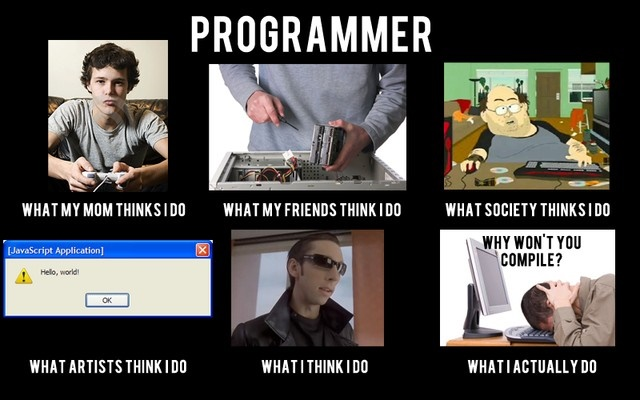
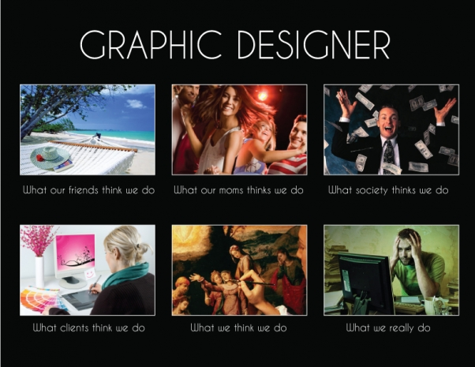
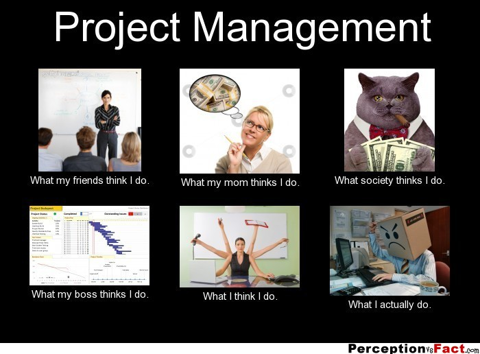
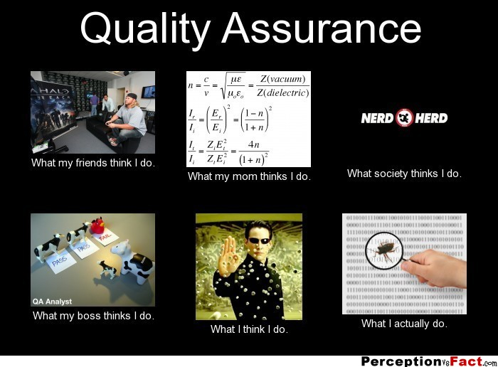

Програмист (софтуерен програмист или софтуерен разработчик) е някой, който пише, създава компютърен софтуер. Компютърният програмист е специалист във
софтуерното програмиране, и може да ползва различни езици като C, C++, Java, Lisp, Python и други. Много често програмист се използва като обобщаващо и
опростяващо название за различни ИТ професии (вкл. софтуерен инженер и други), в контексти, в които конкретните названия на тези професии и ИТ области не
биха донесли конкретно разбиране у слушателя или използващият названието не знае конкретното наименование на съответната ИТ професия.
Денят на програмиста е на 13 септември всяка година, това е един неофициален празник в повечето страни, а в Русия е възприет като официален професионален празник от 2009.

Чисто технически уеб дизайна може да се определи като писане на хипертекст, т.е. текст с интерактивни препратки било то към други части
на текст или към друг текстов документ. Като краен продукт от уеб дизайна се получават HTML страници, картинки в различни формати (най-често
jpeg, png), анимации (най-често gif или flash) и т.н. Отделните компоненти получени при уеб дизайна на една страница или на цял уеб сайт се
разпределят във файлове, които от своя страна се разпределят в директории. Обикновено една уеб страница е един файл (картинките и другите
графични и аудио обекти са отделни файлове въпреки че всичко се визуализира като едно цяло), но това не е задължително особено когато се
използват скриптове изпълнявани на сървъра. В този случай един скрипт може да генерира десетки страници, както и десетки скриптове могат
да генерират само една страница.
В последните години уеб дизайна включва все повече допълнителни елементи, които преди не са се използвали, като например интерактивни
флаш анимации, използване на стилове (CSS), оптимизиране на кода за интернет търсачките и много други. Възможността на компютърно генериране
на хипертекст чрез изпълнявани на сървъри програми или скриптове добавя още повече възможности към стандартните уеб страници, като най-често
това е използването на бази данни, които чрез тези програми и скриптове информацията от тях се обработва в подходящ вид и се визуализира
като уеб страница. Уеб страници използващи активно и разчитащи най-вече на програми и скриптове намиращи се на отделачен сървър се наричат
уеб базирани приложения, като при този тип приложения целият програмен код се намира на отдалечен сървър, а уеб страниците се използват само
като интерфейс за визуализиране на отговорите от заявките, както и за подаване на нови заявки.
Много често дизайнерите приемат уеб дизайна за подобен на графичния дизайн, използван в печатните издания и се стремят да създават уеб
страници, които да изглеждат еднакво за всички потребители. Като концепция уеб дизайнът много се различава от печатната реклама, където има
фиксиран размер на хартията и всичко би следвало да бъде направено точно до милиметър. При уеб дизайна е грешно да бъде използван такъв
подход, защото изходното устройство не е предварително известно, т.е. даден посетител на уеб страница може да визуализира тази уеб страница
чрез същият уеб браузър както този, който я е създал, но също така може да използва и коренно различен софтуер за визуализация, например
браузър на мобилен телефон или, ако е незрящ, просто да слуша чрез компютърен четец. Затова е препоръчително уеб страниците да се създават
като уеб страници, като се спазват стандартите за тях, а не да се създават за да имитират печатни издания.

Ръководителят на проекта е човекът, който носи властта и отговорността за един проект. Работата на ръководителя на проекта е да координира,
подпомага и информира заинтересованите страни в проекта.Официалното наименование според „Национална класификация на професиите и длъжностите
в Република България“ е „Управител (мениджър), проект“, код на длъжността 1319-3002
Работата на ръководителя на проекта се смята за много трудна и всеобхватна, затова и такъв вид специалисти са много търсени и високо
платени в цял свят. Този тип умения са особено важни и за всеки, който провежда самоинициативна дейност, в която са въвлечени и други.
Успешният ръководител на проекти трябва да е проактивен, да предвижда рисковете и да ги посреща адекватно.На практика ръководителят на
проекти поема отговорността над проекта като цяло. За целта той трябва да изпълнява най-различни функции, част от които са:Ръководство,
Взимане на решения,Координация - да комуникира с всички участници в проекта "на техния език",Договаряне,Разрешаване на проблеми,Контрол и
Отчитане пред спонсорите.Както и останалите дейности около проекта, ръководителят може да реши да делегира всяка от тях, но в крайна сметка
за него остава цялостната отговорност. В страни като България, където квалифицираните и надеждни кадри са много рядък и ценен ресурс, често
изискване за ръководителите на проекти е да имат готовност лично да решат всяка подзадача от проекта или да осигурят бърз заместител на всеки
подизпълнител.
Системен администратор е някой, който е нает в организация / компания, за да поддържа и оперира с
компютърна система и/или мрежа. Системните администратори може да са част от отдела за информационни технологии, електроника или комуникации.
Задълженията на системния администратор са широки и варират от една организация до друга. Сисадмините обикновено се занимават с инсталирането,
консултативната помощ и поддръжката на сървъри и други компютърни системи, също за планирането в тази област, както и за прекъсвания на услугата
и други проблеми. Други задължения може да включват скриптиране и незначително програмиране, също управление на проекти, свързани със системите,
наблюдение и обучение на компютърни оператори, консултиране за компютърни проблеми, които не могат да бъдат решени и са извън знанието на екипите
от техническа помощ. За да извършва всичко това, системният администратор трябва да може да демонстрира комбинация от технически умения, съчетание
от концентрация, уравновесеност и добри комуникационни умения, както и да притежава чувство за отговорност.

Тестването на софтуера е основна задача на QA инженера то представлява своеобразно разследване и се провежда с цел да осигури информация
за качеството на продукта или услугата, която се изпитва. Тестване на софтуера може да даде обективна, независима гледна точка, за да се
позволи да се преценят и разбират рисковете преди пускането на софтуера на пазара. Тест техниките включват, но не се ограничават до процеса
на изпълнение на програма или приложение с намерение за намиране на софтуерни бъгове (грешки или други дефекти).Тестване на софтуера може да
се каже, че е процес на валидиране и проверка на една компютърна програма / приложение / като:отговаря на изискванията поставени по време на
своя дизайн и разработка,работи както се очаква,може да се осъществи със същите характеристики,и отговаря на потребностите на заинтересованите
страни.
В началото ниво QA позицията включва обикновена проверка. Например, потребителят може да се наложи да въведете парола в уеб сайт, която
трябва да бъде между пет и десет знака. Инженер по осигуряването на качеството, преди това трябва да тествате как ще работи, ако потребителят
въведе интервал, точка, тире или запетая. В допълнение към тестването на повърхностно ниво, съвременните инженери създават и ползват софтуерни
инструменти за автоматично тестване на готовите продукти.
QA инженерът е мостът между крайния потребител и програмистите, той трябва много добре да разбира проблемите, с които потребителите могат
да се сблъскат. Целта му е да се опита да направи нещата да работят, така че програмиста да хване грешките преди те да се появят. Тестване
изисква много творчество. "Бъговете" са често скрити и при просто изпълнение на очевидни положителни тестове има малка възможност да се открият
проблеми. QA инженерът трябва да използва своята креативност, за да разбере и приложи всички сценарии, при които е вероятно да се открие бъг.
С други думи, QA инженерите, трябва да могат да "виждат отвъд очевидното". Професията изисква познания за разработката на софтуер в поради две
основни причини:Способности за разработка на софтуер са необходими поради вероятността за прилагане на автоматизирани тестове.Ако инженера има
умения за разработка на софтуер то той има по-добра представа за това какво е "опасно" за кодиране, както и какво да се тества по-задълбочено.